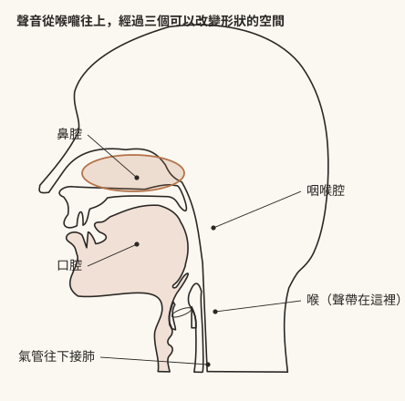

尋找身體的天然音箱：什麼是共鳴？
初階篇：啟蒙與覺察
先講結論
你唱歌的聲音不夠厚、不夠亮，通常不是聲帶的問題，是你把聲音關在喉嚨裡。人體有幾個區塊可以幫聲音加分，位置擺對時，同樣的力道聽起來會大很多。這一章要教你找到那幾個空間，並用觸覺確認自己有沒有放對。
練完你會感覺到的改變：唱同樣的音量，喉嚨比較不累；中低音變厚，高音變亮。
常見誤解
很多人以為聲音越大，就是喉嚨越用力。所以一唱不上去就開始擠。
其實剛好相反。聲帶自己發出的聲音非常小，像一根懸空的琴弦被撥一下，只有「叮」的一聲。你聽到的音量，是這個微弱的振動經過聲道與身體幾個空間修飾之後的結果。擠喉嚨不會讓通道變大，只會讓聲帶被夾住。
另一種誤解是「共鳴就是把聲音往某個地方推過去」。推不了。共鳴腔是被動的：你把喉嚨打開、把位置擺對，振動自然會在那裡放大；擺錯地方，它就縮回去。
原理：為什麼會這樣

把聲帶想成琴弦，把身體內部想成吉他琴身。琴弦懸在空中拉緊再撥，聲音很小；裝進木箱裡，同樣的振動會大很多。差別不在弦，在箱。
聲音主要在三個區域被修飾，各自偏重的頻段不太一樣：
- 胸腔：低音時，聲帶的振動會沿著氣管與胸壁傳上來，手掌摸得到。教學上叫它「胸腔共鳴」，但肺不是一個共鳴箱，這股震動主要是觸覺，不是空腔在放大。平常說話的共鳴主要在咽腔與口腔。
- 咽喉腔：聲帶到口腔之間這段。它最有彈性——喉結高低、舌根鬆緊都會改變它的大小，所以對音色的影響最大。
- 鼻腔與頭部空腔：兩眼之間、上顎上方與鼻咽一帶。鼻腔會加入一個低頻的鼻共鳴色彩，也修飾中高頻泛音；真正的「亮」主要來自聲道形狀與喉嚨上方收窄所產生的歌手共振峰。
三區不是分開工作，而是同時參與，只是比例不同。中低音時胸口的震動感多一些，高音時臉上的震動感多一些。控制這個比例的方法不是「用力往哪裡送」，而是調節通道：喉嚨放鬆、嘴巴形狀改變、軟顎抬起或放下。
這裡有個地方要小心：「頭腔共鳴」不是真的在頭骨裡放大聲音。頭骨不是像琴箱那樣的空箱；裡面的鼻竇雖是含氣腔，對聲音的放大也非常有限。你感覺到的「聲音在頭上」，主要是鼻腔與聲道高頻成分造成的振動感。教學上仍沿用這個說法，但不要把它當成一個空的音箱。
現在就做
練習一：先證明「共鳴比用力有效」
- 微微張嘴，用平常說話的音量發一個「啊」，喉嚨保持鬆。
- 用同樣的音量、同樣的高度再發一次，這次刻意把嘴巴張大、下巴放鬆往下，像打哈欠開頭那樣。
- 比較兩次。第二次音量應該差不多，但聲音明顯更厚、更開。
做錯會怎樣： 如果你發現第二次是靠喉嚨用力「撐」出來的，聲音會變緊、喉嚨會癢。那就停下來，先只做嘴巴的動作，不要加力氣。
練習二：找到胸腔的振動
- 把手掌平放在胸口中央。
- 閉著嘴巴發「嗯」，音高比說話再低一點。
- 慢慢把音壓低，直到手掌感覺到明顯的振動。
- 記住這個音高。這是你的胸口震動最明顯的位置。
做錯會怎樣： 若你為了壓低而用力擠、脖子變粗，代表音高已經低過你能放鬆唱的位置。往上退半個音再試。
練習三：找到鼻腔的振動
- 一手輕碰鼻梁兩側（不要捏緊，只是碰著）。
- 發「ㄇ──」的長音，像小孩子撒嬌抱怨的那種聲音。
- 你會感覺鼻梁在麻、在振動。
- 保持這個感覺，把嘴巴張開變成「ㄇㄧ──」，音高不變，再放掉手，感覺應該還在。
做錯會怎樣： 如果你的鼻音重到聽起來像感冒，是因為嘴巴幾乎沒開。嘴開大一點，讓鼻腔和口腔一起工作，才不會悶。
練習四：把兩區接起來
- 從練習二的低音「嗯」開始，放在胸口。
- 用滑音慢慢往上，嘴巴同時從閉口慢慢張開成「啊」。
- 感覺振動從胸口慢慢移動到臉上。
- 到最高音時停住，再滑回來。
做錯會怎樣： 中間若出現「喀」一聲斷掉，就是喉嚨在中途鎖住了。不要加速衝過去，停在那個音高，用很輕的氣反覆滑，讓它習慣。
練完之後
做對的徵兆：同一個音，你不需要比以前更用力，聽起來就已經比較飽滿；唱完之後喉嚨是鬆的，不是熱的。
常見卡點：很多人練到一半會開始「表演」，音量越唱越大，結果又回到擠喉嚨。練習時刻意保持小聲，是為了讓你把注意力放在振動的位置，不是音量。
下一章要談的是胸腔共鳴本身：怎麼讓中低音站得住、有厚度，而不是虛虛的。